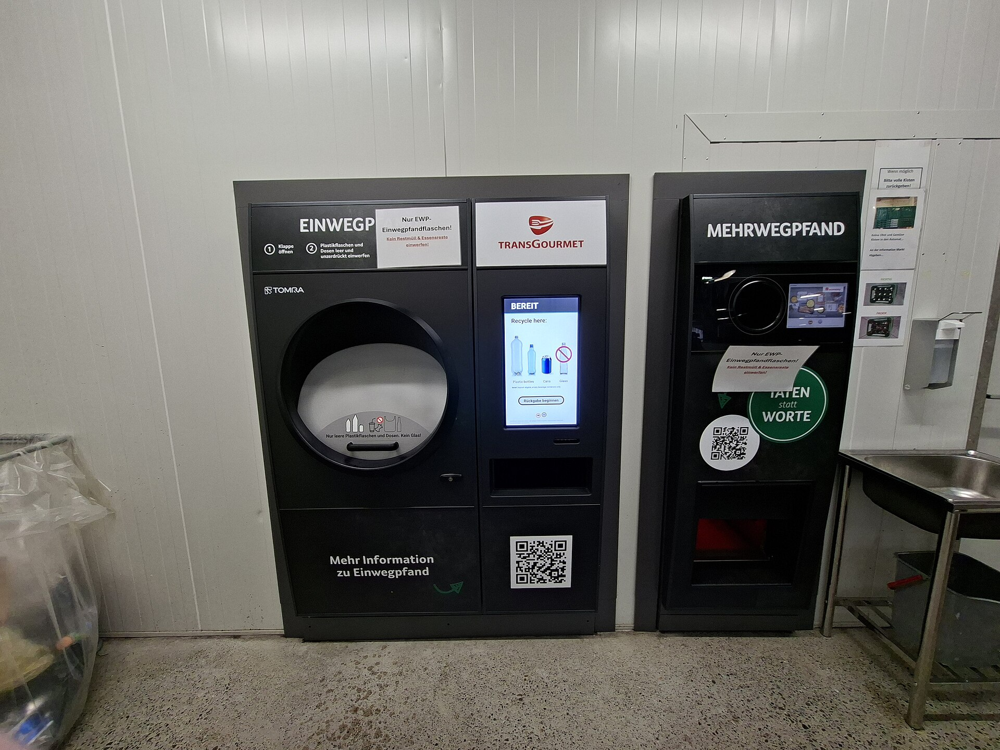

NIE llave en mano
Cita, formularios y acompañamiento
Precio a consultar
Documentos, residencia, vivienda, impuestos, colegios y médicos. Sol responde en segundos con 20 años de experiencia de «España en ruso» y, cuando hace falta una persona, te pasa con un gestor.
Pulsa una tarjeta y Sol empieza a responder. En los casos complejos, te conecta con un abogado, inmobiliaria o gestor entre los 150 colaboradores del portal.
Empieza gratis. Cuando tengas más preguntas, pásate a Plus o Pro. Puedes cancelar cuando quieras.
Para conocerlo
Para quien se muda o ya vive en España
Cuando necesitas una respuesta y también a una persona
Para familias y empresas, condiciones especiales: . Precios con IVA. El pago con tarjeta llegará con el lanzamiento de espanarusa.ai; mientras tanto, un gestor tramita la suscripción.

España vuelve a las urnas nueve meses antes de lo previsto. Explicamos quién puede votar, cómo votar por correo a tiempo y por qué estas elecciones también afectan a quienes no tienen pasaporte español.



70 000 páginas de experiencia en 20 años. Busca por secciones o pregúntale a Sol: encontrará lo que necesitas.
NIE, TIE, padrón, apostilla, traducciones
02Residencia, visados D, nómadas, nacionalidad
03Compra, alquiler, hipoteca, impuestos
04IRPF, modelo 720, bancos, depósitos
05Autónomo, SL, contabilidad, licencias
06Colegios, guarderías, universidades, campamentos
07Seguros, médicos en ruso, clínicas
08Ciudades, playas, excursiones, fiestas
Abogados, gestores, inmobiliarias, aseguradoras y médicos: colaboradores verificados del portal. Un gestor ajusta el precio a tu caso.
Cita, formularios y acompañamiento
No lucrativa, nómada digital, emprendedor
Búsqueda, nota simple, negociación, compraventa
Análisis, cálculo y documentos para el banco
Públicos, privados e internacionales
Homologación, visado de estudios, alojamiento
Abogados que hablan ruso, online y presencial
Residencia fiscal, IRPF, modelo 720, Ley Beckham

El mercado navideño más antiguo de la ciudad: figuras para el belén, árboles y regalos. Hasta el 23 de diciembre.

La obra maestra modernista de Domènech i Montaner y un programa navideño.

El monasterio, la Moreneta, la Escolania y el teleférico.

Jamón, quesos y tapas: ruta de degustación en ruso.

Iluminación navideña, espectáculo flamenco y paseo por Triana.

12 uvas con las campanadas: la gran tradición de España.
 Alquiler
Alquiler Venta
Venta Venta
VentaUn gestor te contactará en horario laboral: lun–vie, 9:00–19:00 hora de España.